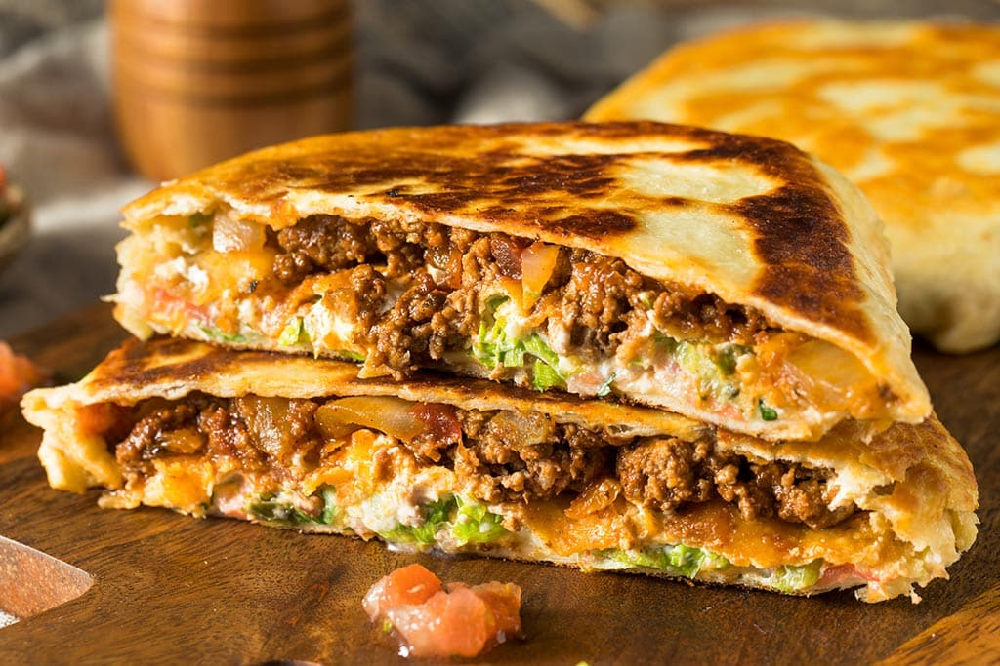

Quesadilla

Description
Quesadillas came to be when Spaniards brought dairy products (not to mention, cows) to Mexico in the 1500s.
Mexicans combined cheese (queso) with tortillas and created a number of delicious combinations, including the quesadilla.
In its most basic form, a quesadilla is simply a grilled tortilla with melted cheese inside.
It is the Mexican grilled cheese, if you will, and you can add additional fillings if you would like.
Ingredients
- 1 whole-grain flour tortilla
- ½ cup freshly grated cheddar cheese
- ¼ cup cooked black beans or pinto beans, rinsed and drained
- 1 tablespoon chopped red bell pepper or jarred roasted bell pepper or a few thinly sliced cherry tomatoes
- 1 tablespoon chopped red onion or green onion
- 1 tablespoon chopped pickled jalapeño (if you like heat)
- 1 teaspoon avocado oil, melted butter or extra-virgin olive oil, for brushing
Steps
- Heat a medium skillet over medium heat.
Warm your tortilla for about 30 seconds, flipping halfway.
Flip once more, then sprinkle one-half of the tortilla with about half of the cheese.
Cover the cheese evenly with the remaining fillings: beans, bell pepper, onion and jalapeño (if using).
- Sprinkle the remaining cheese over the fillings,
and fold over the empty side of the tortilla to enclose the fillings.
Quickly brush the top of the quesadilla with a light coating of oil,
then carefully flip it with a spatula.
- Let the quesadilla cook until golden and crispy on the bottom, about 1 to 2 minutes,
reducing the heat if necessary to prevent burning the tortilla.
Brush the top with a light coating of oil, then flip it and cook until the second side is golden and crispy.
- Immediately remove the skillet from the heat and transfer the quesadilla to a cutting board.
Let it cool for a minute to give the cheese time to set, then use a knife to slice it into 3 pieces.
Serve promptly, with any sauces or garnishes that you would like.
Home